Ages 66+
Contents
Ages 66+¶
Show Rankings¶
Overall Show #Ratings/ Median/Mean Score Music News
Ranking #Respondents Show Show
Ranking Ranking
--------------------------------------------------------------------------------
1 MSA 133/151 10/8.3 1110 1
2 Jim Hightower 124/146 10/8.8 1090 1
3 BBC News Hour 134/148 8/8.0 1068 2
4 Democracy Now 127/147 10/8.3 1058 3
5 E Town 129/148 9/7.6 983 2
6 OGGG 124/149 9/7.8 961 3
7 Roots and Branches 110/148 10/8.6 951 4
8 HTH 115/148 9/7.8 892 5
9 Ralph Nader 104/143 9/8.2 855 4
10 How on Earth 99/147 9/8.6 854 5
11 Hemispheres 102/146 9/8.4 852 6
11 Alternative Radio 102/146 9/8.4 852 6
12 Counterspin 97/147 9/8.7 844 7
13 Blues Legacy 111/146 8/7.6 842 6
14 ASA 127/148 7/6.6 838 7
15 Alan Watts 118/148 8/7.1 836 8
16 Morning Magazine 97/144 9/8.5 821 9
17 Reggae Bloodlines 112/148 7/6.8 762 8
18 Economic Update 88/146 9/8.6 761 10
19 Its The Economy 92/147 9/8.3 760 11
20 African Roots 113/145 7/6.7 755 9
21 Bioneers 96/147 8/7.8 752 12
22 BBC The Newsroom 98/148 8/7.5 738 13
23 Naturally 85/143 10/8.4 712 14
24 Indian Voices 92/146 8/7.7 709 15
25 Connections 87/145 8/8.1 708 16
26 A Public Affair 91/146 8/7.6 691 17
27 HWY 322 86/145 8/7.9 678 10
28 Tributaries 86/145 8/7.7 658 18
29 New Dimensions 84/146 8/7.7 646 19
30 Grateful Dead 103/149 7/6.2 643 11
31 Gospel Chime 101/149 7/6.3 633 12
32 Terrasonic 89/148 8/7.0 623 13
33 Jazz Lives 92/147 7/6.5 595 14
34 Metro 85/144 7/6.9 590 20
35 Labor Exchange 74/144 8/7.6 565 21
36 Project Censored 63/143 10/8.9 559 22
37 Ragtime America 91/148 6/6.1 551 15
38 Corriente 78/148 7/7.0 543 16
38 Kaberet 78/146 7/7.0 543 16
39 Musica Mundi 73/149 8/7.2 523 17
40 La Lucha Sigue 67/145 9/7.8 521 23
40 Dusty Grooves 75/148 7/6.9 521 18
41 Living Dialogues 76/147 7/6.7 510 24
42 Between the Lines 63/147 9/8.0 507 25
43 Seolta Gael 71/148 8/6.9 490 19
44 Peace Talks 62/144 9/7.6 470 26
45 A Classic Monday 74/145 7/6.3 469 20
46 Shortwave Report 56/142 9/8.3 466 27
47 Laura Flanders 63/141 7/7.4 464 28
48 Metro Arts 66/144 7/6.9 457 29
49 WINGS 57/144 9/7.9 449 30
49 Black Talk 64/147 8/7.0 449 30
50 Rising Up with Sonali 54/143 9/8.2 444 31
51 The World 64/145 8/6.9 440 32
52 TUC Radio 49/143 10/8.7 428 33
53 Roots of Jazz 61/145 7/6.9 421 21
54 Swing Shift 57/147 8/7.2 410 22
55 Weed between 51/142 9/7.4 379 34
55 Reggae Transfusions 63/147 6/6.0 379 23
56 The Opera Box 71/148 5/5.2 368 24
57 Making Contact 52/143 7/6.8 355 35
58 Outsources 49/144 7/6.7 328 36
59 Local PM Headlines Spanish 53/143 6/6.0 316 37
60 Restless Mornings 53/145 6/5.9 314 25
61 Soundlab 43/148 7/6.5 281 26
62 Sleepless Nights 48/146 6/5.8 276 27
63 Electronic Air 56/148 4/4.8 269 28
64 Sprouts 36/143 8/7.3 262 38
65 Eclipse 48/148 5/5.3 253 29
66 Dub Palace 48/146 4/4.8 229 30
67 StoryTellers of Color 30/142 8/7.2 216 39
68 Pasa La Voz 35/143 6/6.1 212 40
69 Present Edge 37/148 5/5.5 204 31
70 TRENDS 25/142 8/7.6 189 41
71 Under the Floorboards 34/144 6/5.4 185 32
72 The Heavy Set 30/148 6/6.0 181 33
73 Linea Abierta 23/145 7/6.6 151 42
74 Col Chinese Radio Network 37/145 3/3.6 135 43
75 Smash It Back 24/148 4/5.0 120 34
Music Shows¶
A Classic Monday¶
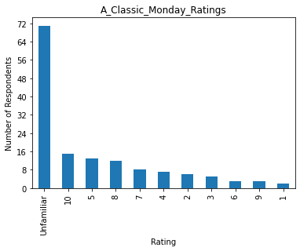
Filter: Ages 65+
Total Respondents: 145
Respondents Familiar with Show: 74
Percent Familiar with Show: 51.0%
Median: 7
Mean: 6.34
Overall Ranking: 45
Music-Show Ranking: 20
African Roots¶
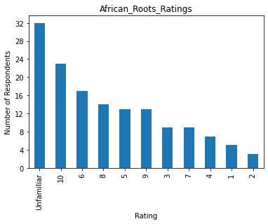
Filter: Ages 65+
Total Respondents: 145
Respondents Familiar with Show: 113
Percent Familiar with Show: 77.9%
Median: 7
Mean: 6.68
Overall Ranking: 20
Music-Show Ranking: 9
Afternoon Sound Alternative¶
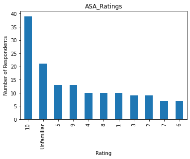
Filter: Ages 65+
Total Respondents: 148
Respondents Familiar with Show: 127
Percent Familiar with Show: 85.8%
Median: 7
Mean: 6.60
Overall Ranking: 14
Music-Show Ranking: 7
Blues Legacy¶
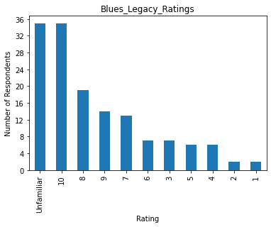
Filter: Ages 65+
Total Respondents: 146
Respondents Familiar with Show: 111
Percent Familiar with Show: 76.0%
Median: 8
Mean: 7.59
Overall Ranking: 13
Music-Show Ranking: 6
Corriente¶
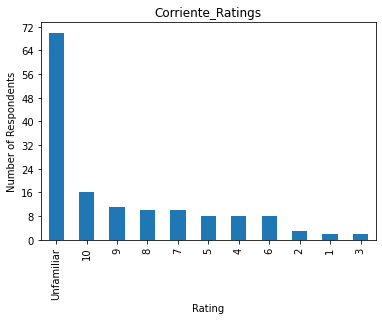
Filter: Ages 65+
Total Respondents: 148
Respondents Familiar with Show: 78
Percent Familiar with Show: 52.7%
Median: 7
Mean: 6.96
Overall Ranking: 38
Music-Show Ranking: 16
Dub Palace¶
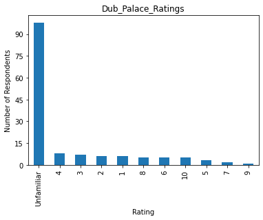
Filter: Ages 65+
Total Respondents: 146
Respondents Familiar with Show: 48
Percent Familiar with Show: 32.9%
Median: 4
Mean: 4.77
Overall Ranking: 66
Music-Show Ranking: 30
Dusty Grooves¶
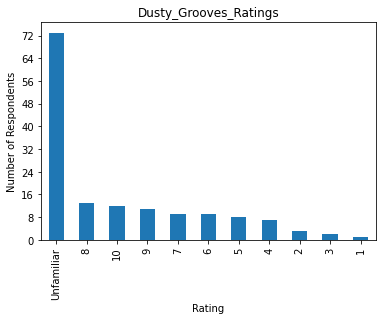
Filter: Ages 65+
Total Respondents: 148
Respondents Familiar with Show: 75
Percent Familiar with Show: 50.7%
Median: 7
Mean: 6.95
Overall Ranking: 40
Music-Show Ranking: 18
Eclipse¶
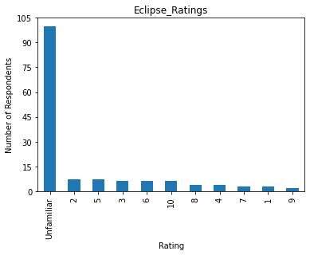
Filter: Ages 65+
Total Respondents: 148
Respondents Familiar with Show: 48
Percent Familiar with Show: 32.4%
Median: 5
Mean: 5.27
Overall Ranking: 65
Music-Show Ranking: 29
Electronic Air¶
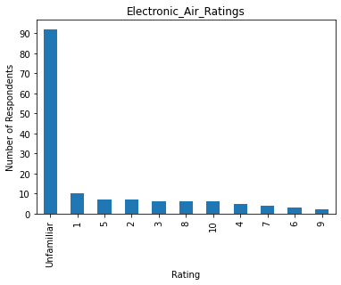
Filter: Ages 65+
Total Respondents: 148
Respondents Familiar with Show: 56
Percent Familiar with Show: 37.8%
Median: 4
Mean: 4.80
Overall Ranking: 63
Music-Show Ranking: 28
eTown¶
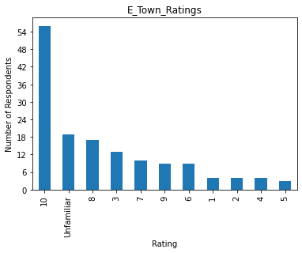
Filter: Ages 65+
Total Respondents: 148
Respondents Familiar with Show: 129
Percent Familiar with Show: 87.2%
Median: 9
Mean: 7.62
Overall Ranking: 5
Music-Show Ranking: 2
Gospel Chime¶
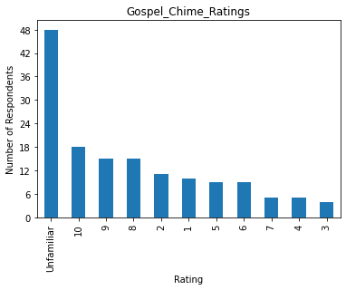
Filter: Ages 65+
Total Respondents: 149
Respondents Familiar with Show: 101
Percent Familiar with Show: 67.8%
Median: 7
Mean: 6.27
Overall Ranking: 31
Music-Show Ranking: 12
Grateful Dead¶
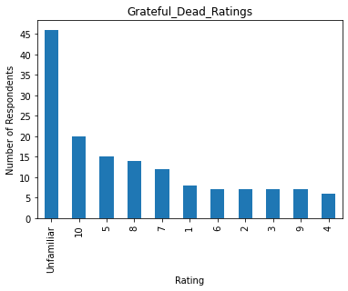
Filter: Ages 65+
Total Respondents: 149
Respondents Familiar with Show: 103
Percent Familiar with Show: 69.1%
Median: 7
Mean: 6.24
Overall Ranking: 30
Music-Show Ranking: 11
Hwy 322¶
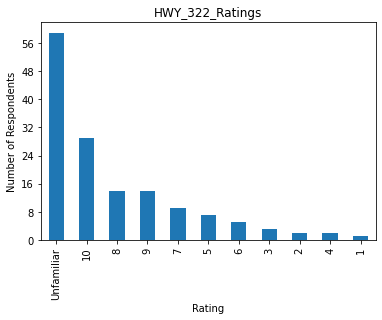
Filter: Ages 65+
Total Respondents: 145
Respondents Familiar with Show: 86
Percent Familiar with Show: 59.3%
Median: 8
Mean: 7.88
Overall Ranking: 27
Music-Show Ranking: 10
Honky Tonk Heroes¶
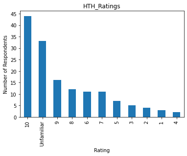
Filter: Ages 65+
Total Respondents: 148
Respondents Familiar with Show: 115
Percent Familiar with Show: 77.7%
Median: 9
Mean: 7.76
Overall Ranking: 8
Music-Show Ranking: 5
Jazz Lives¶
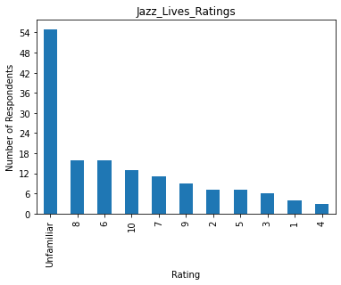
Filter: Ages 65+
Total Respondents: 147
Respondents Familiar with Show: 92
Percent Familiar with Show: 62.6%
Median: 7
Mean: 6.47
Overall Ranking: 33
Music-Show Ranking: 14
Kaberet¶
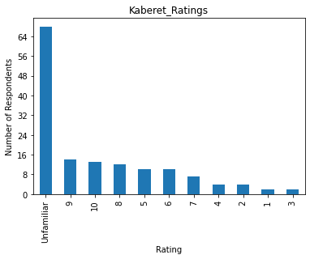
Filter: Ages 65+
Total Respondents: 146
Respondents Familiar with Show: 78
Percent Familiar with Show: 53.4%
Median: 7
Mean: 6.96
Overall Ranking: 38
Music-Show Ranking: 16
Morning Sound Alternative¶
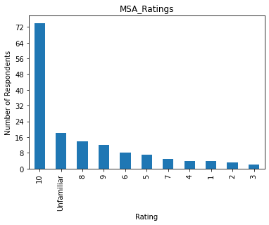
Filter: Ages 65+
Total Respondents: 151
Respondents Familiar with Show: 133
Percent Familiar with Show: 88.1%
Median: 10
Mean: 8.35
Overall Ranking: 1
Music-Show Ranking: 1
Musica Mundi¶
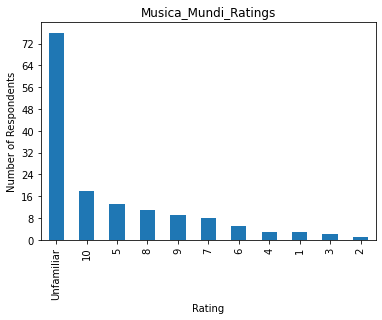
Filter: Ages 65+
Total Respondents: 149
Respondents Familiar with Show: 73
Percent Familiar with Show: 49.0%
Median: 8
Mean: 7.16
Overall Ranking: 39
Music-Show Ranking: 17
Old Grass Gnu Grass¶
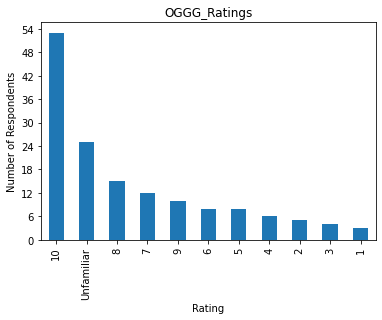
Filter: Ages 65+
Total Respondents: 149
Respondents Familiar with Show: 124
Percent Familiar with Show: 83.2%
Median: 9
Mean: 7.75
Overall Ranking: 6
Music-Show Ranking: 3
The Present Edge¶
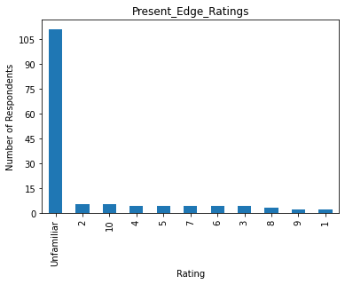
Filter: Ages 65+
Total Respondents: 148
Respondents Familiar with Show: 37
Percent Familiar with Show: 25.0%
Median: 5
Mean: 5.51
Overall Ranking: 69
Music-Show Ranking: 31
Ragtime America¶
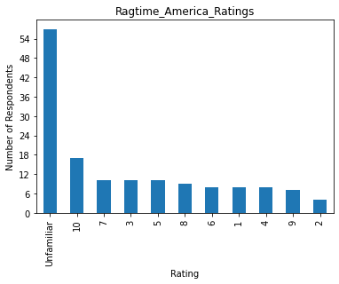
Filter: Ages 65+
Total Respondents: 148
Respondents Familiar with Show: 91
Percent Familiar with Show: 61.5%
Median: 6
Mean: 6.05
Overall Ranking: 37
Music-Show Ranking: 15
Reggae Bloodlines¶
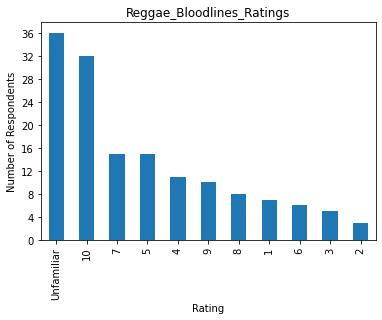
Filter: Ages 65+
Total Respondents: 148
Respondents Familiar with Show: 112
Percent Familiar with Show: 75.7%
Median: 7
Mean: 6.80
Overall Ranking: 17
Music-Show Ranking: 8
Reggae Transfusions¶
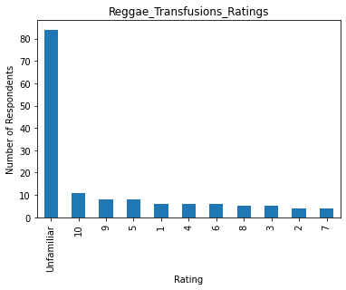
Filter: Ages 65+
Total Respondents: 147
Respondents Familiar with Show: 63
Percent Familiar with Show: 42.9%
Median: 6
Mean: 6.02
Overall Ranking: 55
Music-Show Ranking: 23
Restless Mornings¶
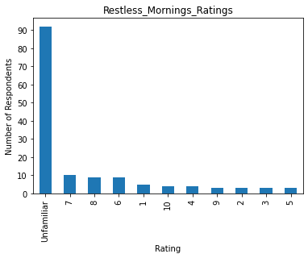
Filter: Ages 65+
Total Respondents: 145
Respondents Familiar with Show: 53
Percent Familiar with Show: 36.6%
Median: 6
Mean: 5.92
Overall Ranking: 60
Music-Show Ranking: 25
Roots and Branches¶
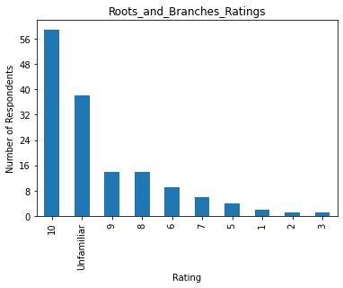
Filter: Ages 65+
Total Respondents: 148
Respondents Familiar with Show: 110
Percent Familiar with Show: 74.3%
Median: 10
Mean: 8.65
Overall Ranking: 7
Music-Show Ranking: 4
Roots of Jazz¶
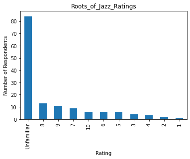
Filter: Ages 65+
Total Respondents: 145
Respondents Familiar with Show: 61
Percent Familiar with Show: 42.1%
Median: 7
Mean: 6.90
Overall Ranking: 53
Music-Show Ranking: 21
Seolta Gael¶
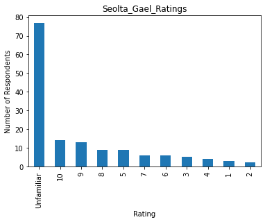
Filter: Ages 65+
Total Respondents: 148
Respondents Familiar with Show: 71
Percent Familiar with Show: 48.0%
Median: 8
Mean: 6.90
Overall Ranking: 43
Music-Show Ranking: 19
Sleepless Nights¶
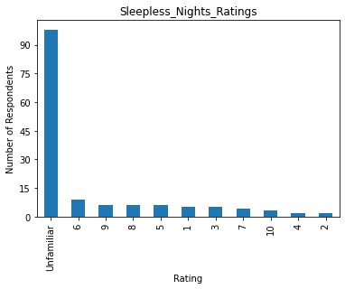
Filter: Ages 65+
Total Respondents: 146
Respondents Familiar with Show: 48
Percent Familiar with Show: 32.9%
Median: 6
Mean: 5.75
Overall Ranking: 62
Music-Show Ranking: 27
Smash It Back¶
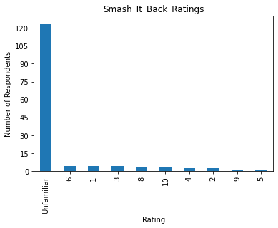
Filter: Ages 65+
Total Respondents: 148
Respondents Familiar with Show: 24
Percent Familiar with Show: 16.2%
Median: 4
Mean: 5.00
Overall Ranking: 75
Music-Show Ranking: 34
SoundLab¶

Filter: Ages 65+
Total Respondents: 148
Respondents Familiar with Show: 43
Percent Familiar with Show: 29.1%
Median: 7
Mean: 6.53
Overall Ranking: 61
Music-Show Ranking: 26
Swing Shift¶
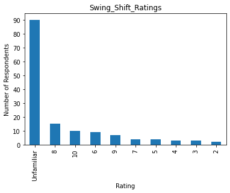
Filter: Ages 65+
Total Respondents: 147
Respondents Familiar with Show: 57
Percent Familiar with Show: 38.8%
Median: 8
Mean: 7.19
Overall Ranking: 54
Music-Show Ranking: 22
Terrasonic¶
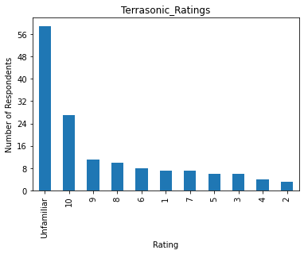
Filter: Ages 65+
Total Respondents: 148
Respondents Familiar with Show: 89
Percent Familiar with Show: 60.1%
Median: 8
Mean: 7.00
Overall Ranking: 32
Music-Show Ranking: 13
The Heavy Set¶
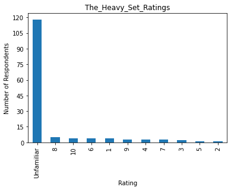
Filter: Ages 65+
Total Respondents: 148
Respondents Familiar with Show: 30
Percent Familiar with Show: 20.3%
Median: 6
Mean: 6.03
Overall Ranking: 72
Music-Show Ranking: 33
The Opera Box¶
Filter: Ages 65+
Total Respondents: 148
Respondents Familiar with Show: 71
Percent Familiar with Show: 48.0%
Median: 5
Mean: 5.18
Overall Ranking: 56
Music-Show Ranking: 24
Under the Floorboards¶
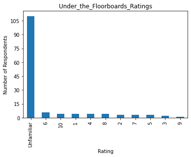
Filter: Ages 65+
Total Respondents: 144
Respondents Familiar with Show: 34
Percent Familiar with Show: 23.6%
Median: 6
Mean: 5.44
Overall Ranking: 71
Music-Show Ranking: 32
News Shows¶
A Public Affairs¶
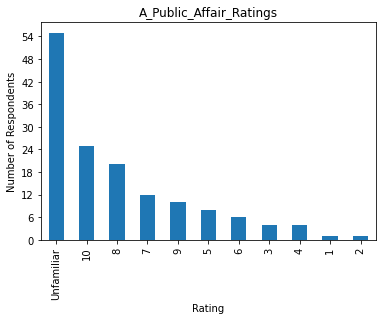
Filter: Ages 65+
Total Respondents: 146
Respondents Familiar with Show: 91
Percent Familiar with Show: 62.3%
Median: 8
Mean: 7.59
Overall Ranking: 26
News-Show Ranking: 17
Alan Watts¶
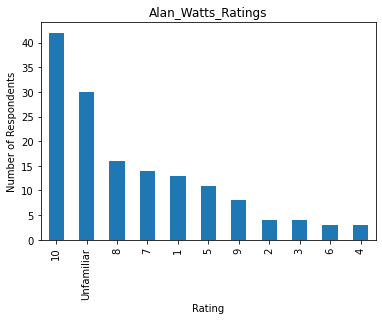
Filter: Ages 65+
Total Respondents: 148
Respondents Familiar with Show: 118
Percent Familiar with Show: 79.7%
Median: 8
Mean: 7.08
Overall Ranking: 15
News-Show Ranking: 8
Alternative Radio¶
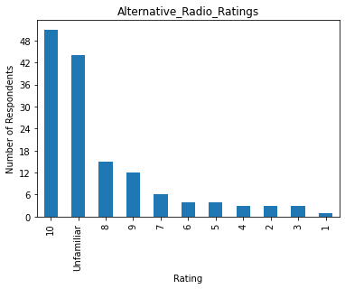
Filter: Ages 65+
Total Respondents: 146
Respondents Familiar with Show: 102
Percent Familiar with Show: 69.9%
Median: 9
Mean: 8.35
Overall Ranking: 11
News-Show Ranking: 6
BBC News Hour¶
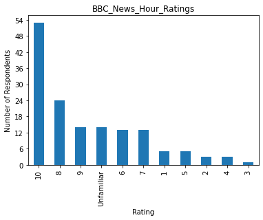
Filter: Ages 65+
Total Respondents: 148
Respondents Familiar with Show: 134
Percent Familiar with Show: 90.5%
Median: 8
Mean: 7.97
Overall Ranking: 3
News-Show Ranking: 2
BBC The Newsroom¶
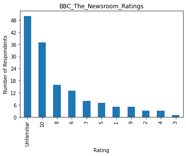
Filter: Ages 65+
Total Respondents: 148
Respondents Familiar with Show: 98
Percent Familiar with Show: 66.2%
Median: 8
Mean: 7.53
Overall Ranking: 22
News-Show Ranking: 13
Between the Lines¶
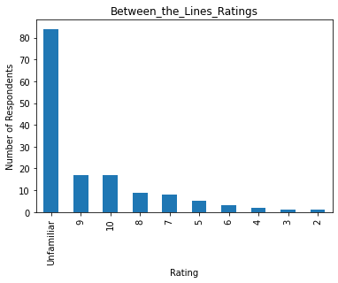
Filter: Ages 65+
Total Respondents: 147
Respondents Familiar with Show: 63
Percent Familiar with Show: 42.9%
Median: 9
Mean: 8.05
Overall Ranking: 42
News-Show Ranking: 25
Bioneers¶
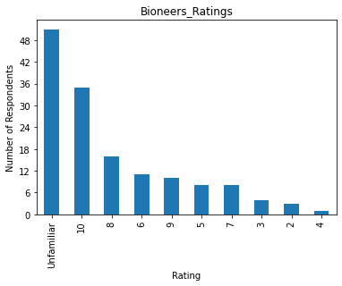
Filter: Ages 65+
Total Respondents: 147
Respondents Familiar with Show: 96
Percent Familiar with Show: 65.3%
Median: 8
Mean: 7.83
Overall Ranking: 21
News-Show Ranking: 12
Black Talk¶
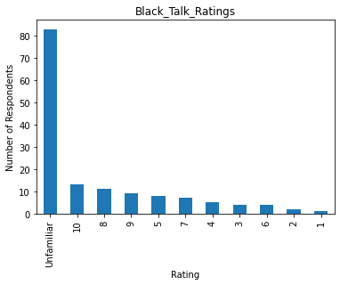
Filter: Ages 65+
Total Respondents: 147
Respondents Familiar with Show: 64
Percent Familiar with Show: 43.5%
Median: 8
Mean: 7.02
Overall Ranking: 49
News-Show Ranking: 30
Colorado Chinese Radio Network¶
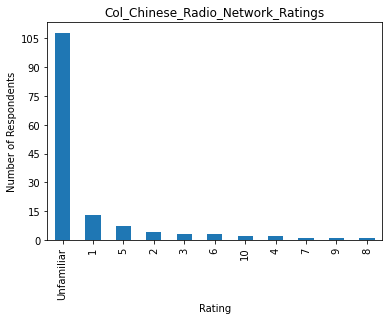
Filter: Ages 65+
Total Respondents: 145
Respondents Familiar with Show: 37
Percent Familiar with Show: 25.5%
Median: 3
Mean: 3.65
Overall Ranking: 74
News-Show Ranking: 43
Connections¶
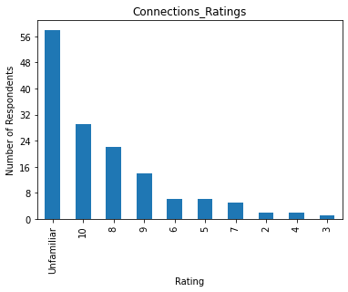
Filter: Ages 65+
Total Respondents: 145
Respondents Familiar with Show: 87
Percent Familiar with Show: 60.0%
Median: 8
Mean: 8.14
Overall Ranking: 25
News-Show Ranking: 16
Counterspin¶
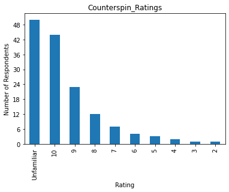
Filter: Ages 65+
Total Respondents: 147
Respondents Familiar with Show: 97
Percent Familiar with Show: 66.0%
Median: 9
Mean: 8.70
Overall Ranking: 12
News-Show Ranking: 7
Democracy Now¶
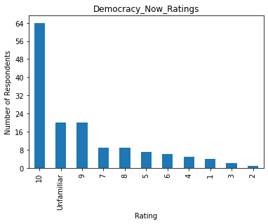
Filter: Ages 65+
Total Respondents: 147
Respondents Familiar with Show: 127
Percent Familiar with Show: 86.4%
Median: 10
Mean: 8.33
Overall Ranking: 4
News-Show Ranking: 3
Economic Update¶
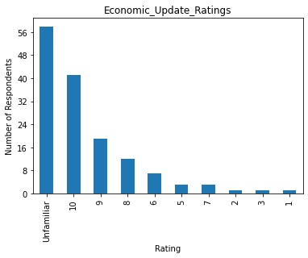
Filter: Ages 65+
Total Respondents: 146
Respondents Familiar with Show: 88
Percent Familiar with Show: 60.3%
Median: 9
Mean: 8.65
Overall Ranking: 18
News-Show Ranking: 10
Hemispheres¶
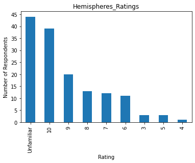
Filter: Ages 65+
Total Respondents: 146
Respondents Familiar with Show: 102
Percent Familiar with Show: 69.9%
Median: 9
Mean: 8.35
Overall Ranking: 11
News-Show Ranking: 6
How on Earth¶
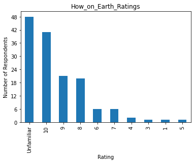
Filter: Ages 65+
Total Respondents: 147
Respondents Familiar with Show: 99
Percent Familiar with Show: 67.3%
Median: 9
Mean: 8.63
Overall Ranking: 10
News-Show Ranking: 5
Indian Voices¶

Filter: Ages 65+
Total Respondents: 146
Respondents Familiar with Show: 92
Percent Familiar with Show: 63.0%
Median: 8
Mean: 7.71
Overall Ranking: 24
News-Show Ranking: 15
It’s the Economy¶
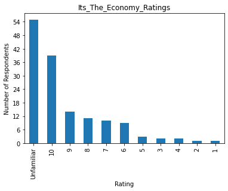
Filter: Ages 65+
Total Respondents: 147
Respondents Familiar with Show: 92
Percent Familiar with Show: 62.6%
Median: 9
Mean: 8.26
Overall Ranking: 19
News-Show Ranking: 11
Jim Hightower¶
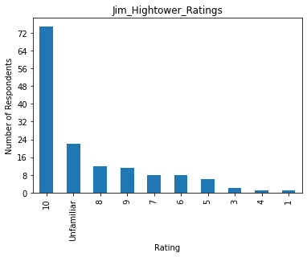
Filter: Ages 65+
Total Respondents: 146
Respondents Familiar with Show: 124
Percent Familiar with Show: 84.9%
Median: 10
Mean: 8.79
Overall Ranking: 2
News-Show Ranking: 1
La Lucha Sigue¶
Filter: Ages 65+
Total Respondents: 145
Respondents Familiar with Show: 67
Percent Familiar with Show: 46.2%
Median: 9
Mean: 7.78
Overall Ranking: 40
News-Show Ranking: 23
Labor Exchange¶
Filter: Ages 65+
Total Respondents: 144
Respondents Familiar with Show: 74
Percent Familiar with Show: 51.4%
Median: 8
Mean: 7.64
Overall Ranking: 35
News-Show Ranking: 21
Linea Abierta¶
Filter: Ages 65+
Total Respondents: 145
Respondents Familiar with Show: 23
Percent Familiar with Show: 15.9%
Median: 7
Mean: 6.57
Overall Ranking: 73
News-Show Ranking: 42
Living Dialogues¶
Filter: Ages 65+
Total Respondents: 147
Respondents Familiar with Show: 76
Percent Familiar with Show: 51.7%
Median: 7
Mean: 6.71
Overall Ranking: 41
News-Show Ranking: 24
Local PM Headlines Spanish¶
Filter: Ages 65+
Total Respondents: 143
Respondents Familiar with Show: 53
Percent Familiar with Show: 37.1%
Median: 6
Mean: 5.96
Overall Ranking: 59
News-Show Ranking: 37
Making Contact¶
Filter: Ages 65+
Total Respondents: 143
Respondents Familiar with Show: 52
Percent Familiar with Show: 36.4%
Median: 7
Mean: 6.83
Overall Ranking: 57
News-Show Ranking: 35
Metro¶

Filter: Ages 65+
Total Respondents: 144
Respondents Familiar with Show: 85
Percent Familiar with Show: 59.0%
Median: 7
Mean: 6.94
Overall Ranking: 34
News-Show Ranking: 20
Metro Arts¶
Filter: Ages 65+
Total Respondents: 144
Respondents Familiar with Show: 66
Percent Familiar with Show: 45.8%
Median: 7
Mean: 6.92
Overall Ranking: 48
News-Show Ranking: 29
Morning Magazine¶
Filter: Ages 65+
Total Respondents: 144
Respondents Familiar with Show: 97
Percent Familiar with Show: 67.4%
Median: 9
Mean: 8.46
Overall Ranking: 16
News-Show Ranking: 9
Naturally¶
Filter: Ages 65+
Total Respondents: 143
Respondents Familiar with Show: 85
Percent Familiar with Show: 59.4%
Median: 10
Mean: 8.38
Overall Ranking: 23
News-Show Ranking: 14
New Dimensions¶
Filter: Ages 65+
Total Respondents: 146
Respondents Familiar with Show: 84
Percent Familiar with Show: 57.5%
Median: 8
Mean: 7.69
Overall Ranking: 29
News-Show Ranking: 19
Outsources¶
Filter: Ages 65+
Total Respondents: 144
Respondents Familiar with Show: 49
Percent Familiar with Show: 34.0%
Median: 7
Mean: 6.69
Overall Ranking: 58
News-Show Ranking: 36
Pasa La Voz¶
Filter: Ages 65+
Total Respondents: 143
Respondents Familiar with Show: 35
Percent Familiar with Show: 24.5%
Median: 6
Mean: 6.06
Overall Ranking: 68
News-Show Ranking: 40
Peace Talks¶
Filter: Ages 65+
Total Respondents: 144
Respondents Familiar with Show: 62
Percent Familiar with Show: 43.1%
Median: 9
Mean: 7.58
Overall Ranking: 44
News-Show Ranking: 26
Project Censored¶
Filter: Ages 65+
Total Respondents: 143
Respondents Familiar with Show: 63
Percent Familiar with Show: 44.1%
Median: 10
Mean: 8.87
Overall Ranking: 36
News-Show Ranking: 22
Rising Up with Sonali¶
Filter: Ages 65+
Total Respondents: 143
Respondents Familiar with Show: 54
Percent Familiar with Show: 37.8%
Median: 9
Mean: 8.22
Overall Ranking: 50
News-Show Ranking: 31
Sprouts¶
Filter: Ages 65+
Total Respondents: 143
Respondents Familiar with Show: 36
Percent Familiar with Show: 25.2%
Median: 8
Mean: 7.28
Overall Ranking: 64
News-Show Ranking: 38
StoryTellers of Color¶
Filter: Ages 65+
Total Respondents: 142
Respondents Familiar with Show: 30
Percent Familiar with Show: 21.1%
Median: 8
Mean: 7.20
Overall Ranking: 67
News-Show Ranking: 39
Laura Flanders¶
Filter: Ages 65+
Total Respondents: 141
Respondents Familiar with Show: 63
Percent Familiar with Show: 44.7%
Median: 7
Mean: 7.37
Overall Ranking: 47
News-Show Ranking: 28
Ralph Nader¶
Filter: Ages 65+
Total Respondents: 143
Respondents Familiar with Show: 104
Percent Familiar with Show: 72.7%
Median: 9
Mean: 8.22
Overall Ranking: 9
News-Show Ranking: 4
Shortwave Report¶
Filter: Ages 65+
Total Respondents: 142
Respondents Familiar with Show: 56
Percent Familiar with Show: 39.4%
Median: 9
Mean: 8.32
Overall Ranking: 46
News-Show Ranking: 27
The World¶
Filter: Ages 65+
Total Respondents: 145
Respondents Familiar with Show: 64
Percent Familiar with Show: 44.1%
Median: 8
Mean: 6.88
Overall Ranking: 51
News-Show Ranking: 32
TRENDS¶
Filter: Ages 65+
Total Respondents: 142
Respondents Familiar with Show: 25
Percent Familiar with Show: 17.6%
Median: 8
Mean: 7.56
Overall Ranking: 70
News-Show Ranking: 41
Tributaries¶
Filter: Ages 65+
Total Respondents: 145
Respondents Familiar with Show: 86
Percent Familiar with Show: 59.3%
Median: 8
Mean: 7.65
Overall Ranking: 28
News-Show Ranking: 18
TUC Radio¶
Filter: Ages 65+
Total Respondents: 143
Respondents Familiar with Show: 49
Percent Familiar with Show: 34.3%
Median: 10
Mean: 8.73
Overall Ranking: 52
News-Show Ranking: 33
WINGS¶
Filter: Ages 65+
Total Respondents: 144
Respondents Familiar with Show: 57
Percent Familiar with Show: 39.6%
Median: 9
Mean: 7.88
Overall Ranking: 49
News-Show Ranking: 30
Weed Between¶
Filter: Ages 65+
Total Respondents: 142
Respondents Familiar with Show: 51
Percent Familiar with Show: 35.9%
Median: 9
Mean: 7.43
Overall Ranking: 55
News-Show Ranking: 34